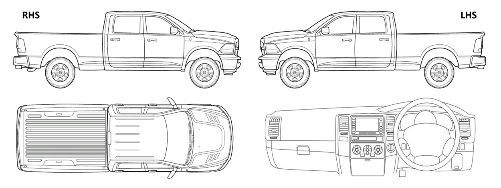

<div class="damage-marker-container">
  <div class="image-container border border-primary">
    
    
    <!-- Damage markers overlay -->
    @for (marker of markers; track marker.sr) {
        <div 
        class="damage-marker"
        [style.left.%]="marker.x"
        [style.top.%]="marker.y"
        nz-tooltip 
        [nzTooltipTitle]="marker.description || marker.remarks"
        (click)="removeMarker(marker, $event)"
        >
            <span class="marker-number">{{ marker.sr }}</span>
        </div>
    }
  </div>
</div>
<app-damage-marker-details [(visible)]="isModalOpen" [vin]="vin" [issue]="selectedIssue"></app-damage-marker-details>